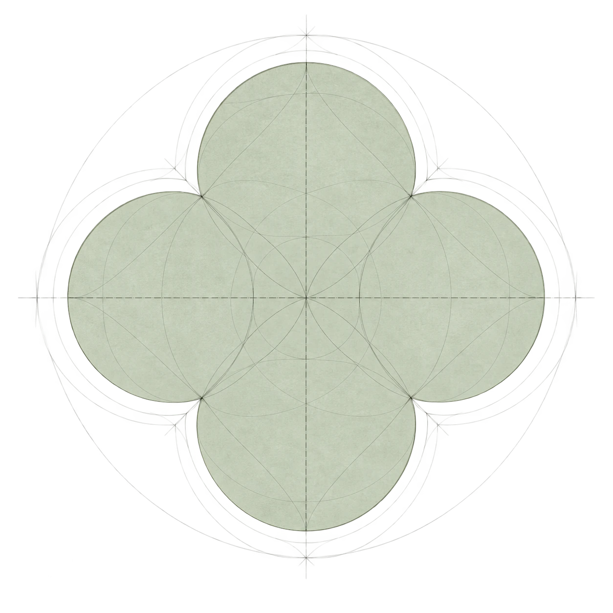
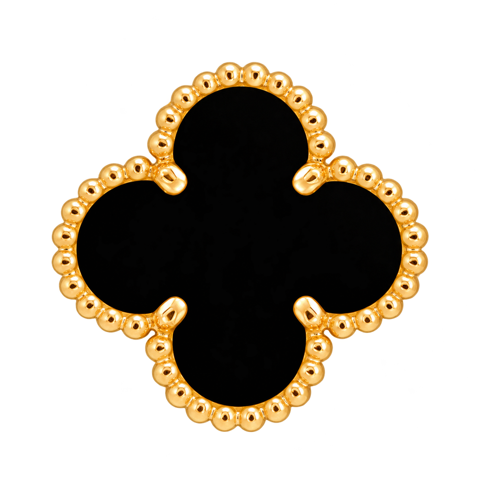

The Four-Leaf
Motif

Before material, color, or craftsmanship, Alhambra is recognizable by its silhouette. Four rounded lobes meet around a centered axis, creating a form that feels both natural and controlled. Its symmetry and recognizable beaded edge give the motif a consistent identity, even as the interior material or scale changes.
Shape
Before material, color, or craftsmanship, Alhambra is recognized by its silhouette. Four rounded lobes meet around a centered axis, creating a form that feels both organic and controlled.
The shape remains legible without a chain, a stone, or any decorative finish. The silhouette is the visual starting point.
Edge/Detail
The motif becomes distinctive through the relationship between its contour and what it contains. The beaded perimeter, central field, and surrounding space all work together to define the form.
The border separates surface from surrounding space, allowing the silhouette to remain crisp and immediately recognizable even when the interior changes.
GOLD BEAD BORDER
A repeated sequence
defines the perimeter.
CENTRAL MATERIAL
Stone or precious material
fills the interior field.
FRAME
The border
separates surface from
surrounding space.

Alhambra’s edge is not a flat outline. A sequence of gold beads traces the contour, separating the central material from the surrounding space while reinforcing the motif’s identity.
Its recognizable form comes from the relationship between these elements: four balanced lobes, a clearly defined center, and the repeating beads of the frame. Together they create a consistent outline that can be carried into different materials, sizes, and forms.